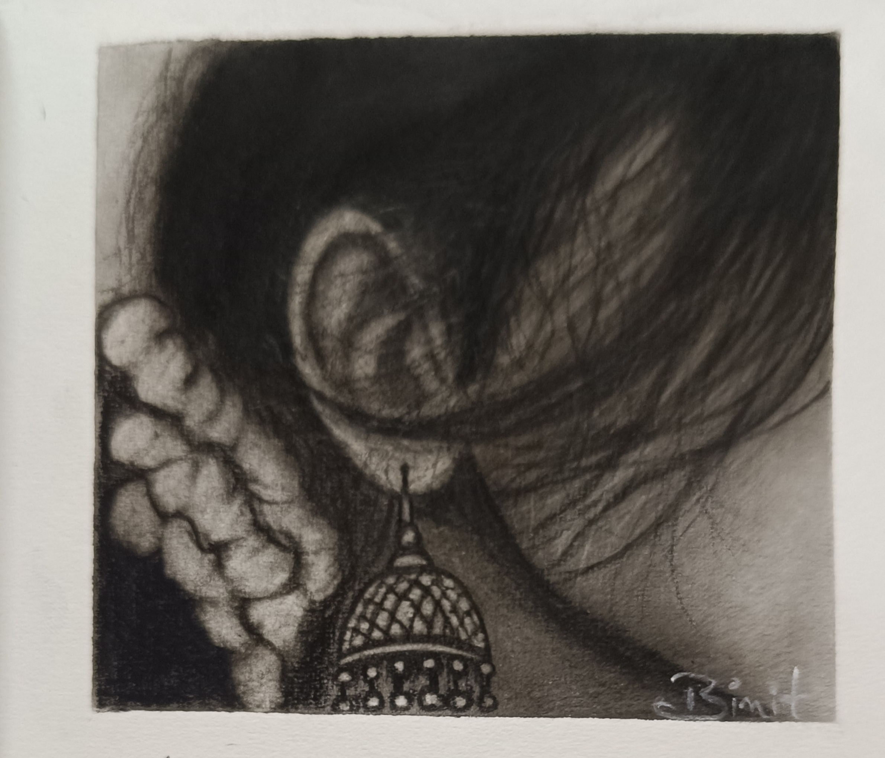

Gallery



Artist | Portraits | Anime Sketches
View My WorkHi, I’m Binit — a self-taught artist passionate about charcoal, pencil sketches, and anime-inspired art. I create unique portraits and take commission work for those who want something special.
Want custom artwork? Here’s how to order: